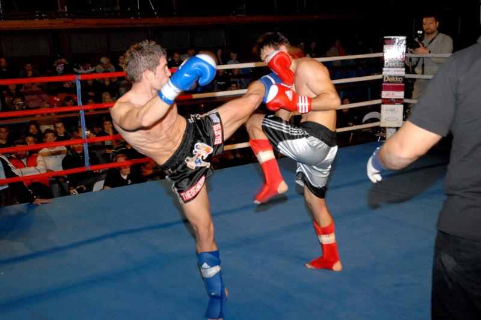
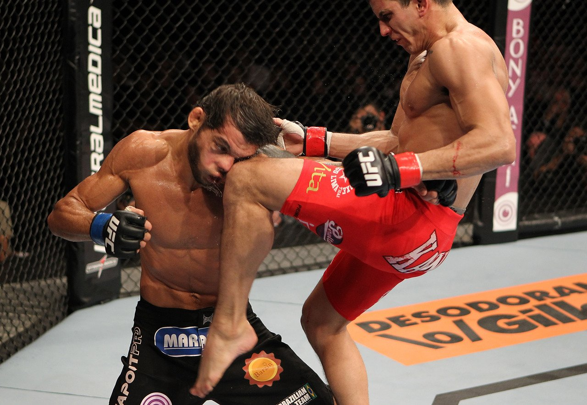
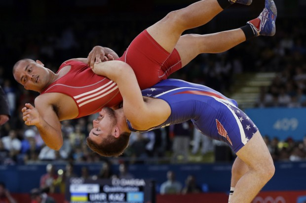

The Sport
Originating from the full contact sport of Vale tudo in Brazil, the UFC was created in the United States in 1993 with minimal rules, and was promoted as a competition to determine the most effective martial art for unarmed combat situations. It wasn't long before the fighters realized that if they wanted to be competitive among the best, they needed to train in additional disciplines. UFC fighters began to morph into well-rounded, balanced fighters that could fight standing or on the floor. This blend of fighting styles and skills became known as mixed martial arts (MMA). Today, the UFC is the premier organization in MMA and enforces the Unified Rules of Mixed Martial Arts without exception. With more than 40 fights every year, the UFC hosts most of the top-ranked fighters in the world. Events are held not only in America, but in many countries all over the globe. MMA is currently the fastest growing sport in the world.
Styles of Fighting
Boxing is a combat sport in which a fighter uses his fists to throw strikes in an attempt to knock out his opponent. Boxing can be traced back as early as 675 BC in Greece, and was acknowledged as an Olympic sport in 688 BC. Nearly every UFC fighter has some boxing training in order to develop his striking skills and some techniques have been modified in MMA. Because boxers stand up straight and fight with their hands, they are not protecting their torso to prevent a take down. UFC fighters have to keep their arms closer to their torso to prevent such vulnerability.
Brazilian Jiu Jitsu (BJJ) was developed in the early 20th century by Mitsuyo Maeda, and focuses on grappling and ground fighting. BJJ is considered a combat sport and a self-defense system and uses submission holds, joint locks and choke holds to subdue the opponent. It is a very effective style in which a fighter can use little to no strength to subdue a much larger opponent. Many MMA fighters train in BJJ to prepare them for grappling and ground fighting, which can be useful when a fighter is up against a wrestler with his back to the mat. The fighter on the bottom can use BJJ to do a sweep (or reverse) to gain the dominant position or to end the fight with a submission.

Kickboxing is a group of stand-up combat sports based on kicking and punching, historically developed from Karate, Muay Thai, Khmer Boxing, and Western boxing. Kickboxing is practiced for self-defense, general fitness, or as a contact sport. Japanese kickboxing originated in the 1960s, with competitions held since then. American kickboxing originated in the 1970s and was brought to prominence in September 1974, when the Professional Karate Association (PKA) held the first World Championships. Historically, kickboxing can be considered a hybrid martial art formed from the combination of elements of various traditional styles. This approach became increasingly popular since the 1970s, and since the 1990s, kickboxing has contributed to the emergence of mixed martial arts via further hybridization with ground fighting techniques from Brazilian jiu-jitsu and folk wrestling.

Established in Thailand, the kickboxing style of Muay Thai focuses on both striking and clinching techniques. The eight points of contact in Muay Thai include punches, elbows, knee strikes and kicks. There are several types of clinches used, including arm clinch, side clinch and low clinch. Many MMA fighters train in Muay Thai because the style teaches fighters how to throw elbow and knee strikes with enough force to cut or even knock out their opponent while in close proximity (like the clinch).

Originating in Great Britain, this style of amateur wrestling was deemed an Olympic sport in 1904. Wrestlers are scored on their performance and are allowed to use their legs or the legs of their opponents in offense and defense. The ultimate goal is to get the opponent's shoulder to touch the mat (known as a fall) for an immediate win. MMA fighters use freestyle wrestling for its effective take downs, predominantly the single leg and double leg take downs. One of the most practical defenses in Freestyle Wrestling is the sprawl. For fighters that like to keep the fight standing, learning how to effectively sprawl is beneficial because it keeps the fight off the mat.